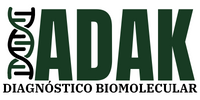

|  | Home | Exames| Contato |
Sobre a empresaSomos uma empresa focada em oferecer excelência em exames laboratoriais com resultados seguros e confiáveis e uma medicina laboratorial ética e humana. Sempre buscamos melhorar continuamente os exames e serviços prestados com o intuito de atender as expectativas de qualidade e satisfação de nossos clientes. Nosso objetico é tornar-se referência em diagnóstico molecular , por meio do acompanhamento da evolução da ciência, visando ser reconhecido pelo trabalho de qualidade, confiança e inovação. |
|
Todos os direitos reservados |
|